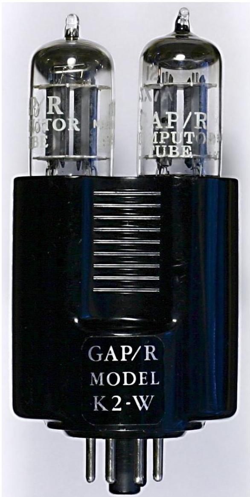
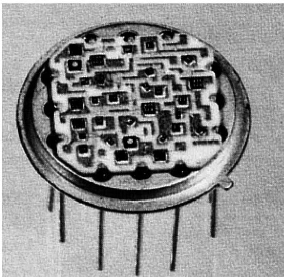
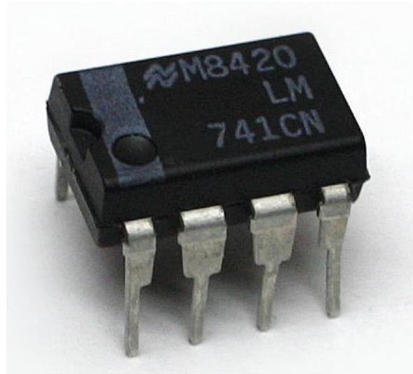

Operational Amplifier (Op-Amp)
Introduction
An operational amplifier (op-amp) is a DC-coupled high-gain electronic voltage amplifier with a differential input and, usually, a single-ended output.[1] In this configuration, an op-amp produces an output potential (relative to circuit ground) that is typically hundreds of thousands of times larger than the potential difference between its input terminals.[2]
Operational amplifiers had their origins in analog computers, where they were used to do mathematical operations in many linear, non-linear and frequency-dependent circuits. Characteristics of a circuit using an op-amp are set by external components with little dependence on temperature changes or manufacturing variations in the op-amp itself, which makes op-amps popular building blocks for circuit design.
Op-amps are among the most widely used electronic devices today, being used in a vast array of consumer, industrial, and scientific devices. Many standard IC op-amps cost only a few cents in moderate production volume; however some integrated or hybrid operational amplifiers with special performance specifications may cost over $100 US in small quantities.[3] Op-amps may be packaged as components, or used as elements of more complex integrated circuits.
The op-amp is one type of differential amplifier. Other types of differential amplifier include the fully differential amplifier (similar to the op-amp, but with two outputs), the instrumentation amplifier (usually built from three op-amps), the isolation amplifier (similar to the instrumentation amplifier, but with tolerance to common-mode voltages that would destroy an ordinary op-amp), and negative feedback amplifier (usually built from one or more op-amps and a resistive feedback network).
Operation
The amplifier's differential inputs consist of a non-inverting input (+) with voltage $V_{+}$ and an inverting input (-) with voltage $V_{-}$; ideally the op-amp amplifies only the difference in voltage between the two, which is called the differential input voltage. The output voltage of the op-amp $V_{\text{out}}$ is given by the equation:
where $A_{OL}$ is the open-loop gain of the amplifier (the term "open-loop" refers to the absence of a feedback loop from the output to the input).
Open loop amplifier
The magnitude of $A_{OL}$ is typically very large—100,000 or more for integrated circuit op-amps—and therefore even a quite small difference between $V_{+}$ and $V_{-}$ drives the amplifier output nearly to the supply voltage. Situations in which the output voltage is equal to or greater than the supply voltage are referred to as saturation of the amplifier. The magnitude of $A_{OL}$ is not well controlled by the manufacturing process, and so it is impractical to use an operational amplifier as a stand-alone differential amplifier.
Without negative feedback, and perhaps with positive feedback for regeneration, an op-amp acts as a comparator. If the inverting input is held at ground (0 V) directly or by a resistor $\mathbf{R}_{\mathrm{g}}$, and the input voltage $\mathbf{V}_{\mathrm{in}}$ applied to the non-inverting input is positive, the output will be maximum positive; if $\mathbf{V}_{\mathrm{in}}$ is negative, the output will be maximum negative. Since there is no feedback from the output to either input, this is an open loop circuit acting as a comparator. The circuit's gain is just the $A_{OL}$ of the op-amp.
Closed loop

If predictable operation is desired, negative feedback is used, by applying a portion of the output voltage to the inverting input. The closed loop feedback greatly reduces the gain of the circuit. When negative feedback is used, the circuit's overall gain and response becomes determined mostly by the feedback network, rather than by the op-amp characteristics.
In the non-inverting amplifier on the right, the presence of negative feedback via the voltage divider $R_{\mathrm{f}}$, $R_{\mathrm{g}}$ determines the closed-loop gain $A\mathrm{CL} = V_{\mathrm{out}} / V_{\mathrm{in}}$. Equilibrium will be established when $V_{\mathrm{out}}$ is just sufficient to "reach around and pull" the inverting input to the same voltage as $V_{\mathrm{in}}$. The voltage gain of the entire circuit is thus $1 + R_{\mathrm{f}} / R_{\mathrm{g}}$.
By combining terms, we determine the closed-loop gain $A_{CL}$:
Inverting amplifier: In an inverting amplifier, the output voltage changes in an opposite direction to the input voltage.
If $A_{OL}$ is very large, the gain equation simplifies to:
Op-amp characteristics
Ideal op-amps
An ideal op-amp is usually considered to have the following properties:
- Infinite open-loop gain $G = v_{\mathrm{out}} / v_{\mathrm{in}}$
- Infinite input impedance $R_{\mathrm{in}}$, and so zero input current
- Zero input offset voltage
- Infinite voltage range available at the output
- Infinite bandwidth with zero phase shift and infinite slew rate
- Zero output impedance $R_{\mathrm{out}}$
- Zero noise
- Infinite Common-mode rejection ratio (CMRR)
- Infinite Power supply rejection ratio.
The Two "Golden Rules"
These ideals can be summarized by two rules useful for analyzing closed-loop circuits:
- The output attempts to do whatever is necessary to make the voltage difference between the inputs zero.
- The inputs draw no current.
Real op-amps
Real operational amplifiers suffer from several non-ideal effects:
DC imperfections
- Finite gain: Open-loop gain is infinite in the ideal operational amplifier but finite in real operational amplifiers (100,000 to over 1 million).
- Finite input impedances: The differential input impedance is defined as the impedance between its two inputs; the common-mode input impedance is the impedance from each input to ground.
- Non-zero output impedance: Low output impedance is important for low-impedance loads; for these loads, the voltage drop across the output impedance effectively reduces the open loop gain.
- Input current: Due to biasing requirements or leakage, a small amount of current flows into the inputs.
- Input offset voltage: This voltage is what is required across the op-amp's input terminals to drive the output voltage to zero.
- Common-mode gain: A perfect operational amplifier amplifies only the voltage difference between its two inputs, completely rejecting all voltages that are common to both. However, the differential input stage of an operational amplifier is never perfect.
AC imperfections
The op-amp gain calculated at DC does not apply at higher frequencies. Thus, for high-speed operation, more sophisticated considerations must be used in an op-amp circuit design.
- Finite bandwidth: All amplifiers have finite bandwidth. To a first approximation, the op-amp has the frequency response of an integrator with gain.
- Input capacitance: Most important for high frequency operation because it further reduces the open-loop bandwidth of the amplifier.
Non-linear imperfections

- Saturation: Output voltage is limited to a minimum and maximum value close to the power supply voltages.
- Slewing: The amplifier's output voltage reaches its maximum rate of change, the slew rate, usually specified in volts per microsecond.
- Non-linear input-output relationship: The output voltage may not be accurately proportional to the difference between the input voltages (distortion).
Internal circuitry of 741-type op-amp

Sourced by many manufacturers, and in multiple similar products, an example of a bipolar transistor operational amplifier is the 741 integrated circuit designed by Dave Fullagar at Fairchild Semiconductor after Bob Widlar's LM301 integrated circuit design.[9]
Architecture
A small-scale integrated circuit, the 741 op-amp shares with most op-amps an internal structure consisting of three gain stages:
- Differential amplifier (outlined blue): provides high differential amplification (gain), with rejection of common-mode signal, low noise, high input impedance.
- Voltage amplifier (outlined magenta): provides high voltage gain, a single-pole frequency roll-off.
- Output amplifier (outlined cyan and green): provides high current gain (low output impedance), along with output current limiting, and output short-circuit protection.
Differential amplifier
A cascaded differential amplifier followed by a current-mirror active load, the input stage (outlined in blue) is a transconductance amplifier, turning a differential voltage signal at the bases of Q1, Q2 into a current signal into the base of Q15.
It entails two cascaded transistor pairs, satisfying conflicting requirements. The first stage consists of the matched NPN emitter follower pair Q1, Q2 that provide high input impedance. The second is the matched PNP common-base pair Q3, Q4 that eliminates the undesirable Miller effect; it drives an active load Q7 plus matched pair Q5, Q6.
Voltage amplifier
The (class-A) voltage gain stage (outlined in magenta) consists of the two NPN transistors Q15/Q19 connected in a Darlington configuration and uses the output side of current mirror Q12/Q13 as its collector (dynamic) load to achieve its high voltage gain. The output sink transistor Q20 receives its base drive from the common collectors of Q15 and Q19; the level-shifter Q16 provides base drive for the output source transistor Q14.
Output amplifier
The output stage (Q14, Q20, outlined in cyan) is a Class AB push-pull emitter follower amplifier. It provides an output drive with impedance of $\approx 50\Omega$, in essence, current gain. Transistor Q16 (outlined in green) provides the quiescent current for the output transistors, and Q17 provides output current limiting.
Classification
Op-amps may be classified by their construction:
- discrete (built from individual transistors or tubes/valves)
- IC (fabricated in an Integrated circuit) — most common
- hybrid
IC op-amps may be classified in many ways, including:
- Grade: Military, Industrial, or Commercial grade.
- Package type: DIP, surface-mount, etc.
- Internal compensation: Op-amps with a built-in capacitor are termed "compensated".
- Single, dual and quad versions: Meaning 1, 2 or 4 operational amplifiers are included in the same package.
- Rail-to-rail: Can work with input (and/or output) signals very close to the power supply rails.
- CMOS op-amps: Provide extremely high input resistances.
Applications

The use of op-amps as circuit blocks is much easier and clearer than specifying all their individual circuit elements (transistors, resistors, etc.).
Applications without using any feedback
The op-amp is being used as a voltage comparator. A voltage level detector can be obtained if a reference voltage $V_{\mathrm{ref}}$ is applied to one of the op-amp's inputs.
Positive feedback applications
Another typical configuration of op-amps is with positive feedback, which takes a fraction of the output signal back to the non-inverting input. An important application of it is the comparator with hysteresis, the Schmitt trigger.
Negative feedback applications
In the non-inverting amplifier, the presence of negative feedback via the voltage divider determines the closed-loop gain. In an inverting amplifier, the output voltage changes in an opposite direction to the input voltage.
Other applications
- audio- and video-frequency pre-amplifiers and buffers
- differential amplifiers
- differentiators and integrators
- filters
- precision rectifiers and peak detectors
- voltage and current regulators
- analog-to-digital converters
- digital-to-analog converters
- oscillators and waveform generators
Historical timeline
- 1941: A vacuum tube op-amp. First found in U.S. Patent 2,401,779 filed by Karl D. Swartzel Jr. of Bell Labs.
- 1947: An op-amp with an explicit non-inverting input. Designed by Loebe Julie.
- 1949: A chopper-stabilized op-amp. Designed by Edwin A. Goldberg.
-
1953: A commercially available op-amp. Model K2-W from George A. Philbrick Researches.

GAP/R's K2-W: a vacuum-tube op-amp (1953) -
1961: A discrete IC op-amp. P45.

GAP/R's model P45: a solid-state, discrete op-amp (1961) -
1962: An op-amp in a potted module.

GAP/R's model PP65: a solid-state op-amp in a potted module (1962) - 1963: A monolithic IC op-amp. $\mu$A702 designed by Bob Widlar at Fairchild.
- 1968: Release of the $\mu$A741. Designed by Dave Fullagar at Fairchild.
-
1970: First high-speed, low-input current FET design.

ADI's HOS-050: a high speed hybrid IC op-amp (1979) -
Recent trends. Low-voltage op-amps, rail-to-rail output.

An op-amp in a modern mini DIP
References & See Also
See also
- Operational amplifier applications
- Differential amplifier
- Instrumentation amplifier
- Active filter
- Current-feedback operational amplifier
- Analog computer
References
- [1] Maxim Application Note 1108: Understanding Single-Ended, Pseudo-Differential and Fully-Differential ADC Inputs – Retrieved November 10, 2007
- [2] Analog devices MT-044 Tutorial
- [5] Horowitz, Paul; Hill, Winfield (1989). The Art of Electronics. Cambridge, UK: Cambridge University Press. ISBN 0-521-37095-7.